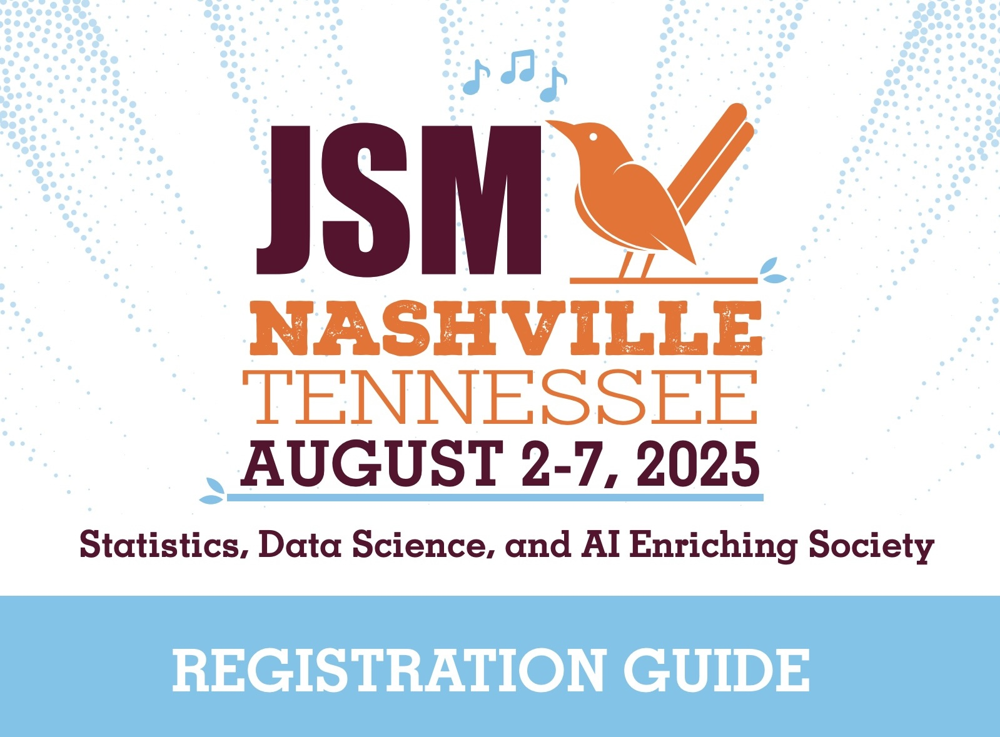

UNC Course Resources & JSM 2025 Short Course
Events
UNC Course Resources & JSM 2025 Short Course
🧬 Deep Learning Methods in Biomedical Sciences with PyTorch
Free Course Materials Now Available!
- Complete lecture slides (PPT)
- Homework assignments
- Comprehensive coverage: CNN, RNN, GNN, Transformer, GAN, BioBERT
- Focus on medical imaging, genomics, and clinical text analysis
📚 Access materials at: https://bios740.github.io
Instructors: Prof. Hongtu Zhu & TA Runpeng Dai

📊 Deep Learning Methods in Advanced Statistical Problems

🎓 Expert Instructors
Hongtu Zhu
UNC
Xiao Wang
Purdue University
Runpeng Dai
UNC
📚 Course Overview
This intensive one-day course is specifically designed for researchers in statistics and data analysis who are eager to explore the cutting-edge applications of deep learning in statistical problems.
🎯 What You'll Learn
- Latest trends in deep learning for statistical analysis
- Practical applications in complex statistical problems
- Hands-on experience with deep learning methodologies